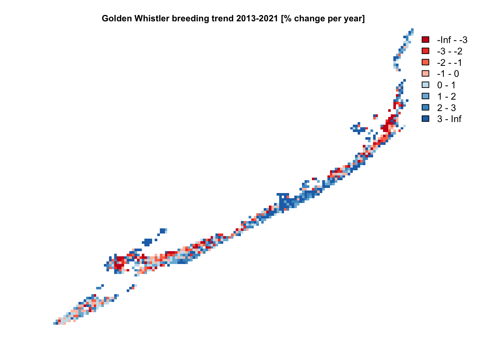
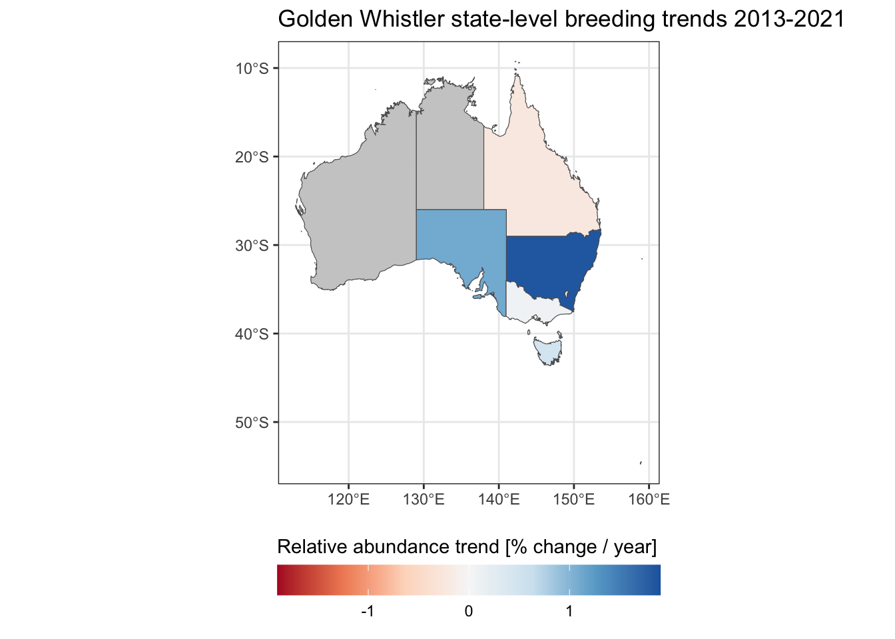

library(dplyr)
library(ggplot2)
library(rnaturalearth)
library(sf)
library(terra)
library(ebirdst)
trends_runs <- ebirdst_runs %>%
filter(has_trends) %>%
select(species_code, common_name,
trends_season, trends_region,
trends_start_year, trends_end_year,
trends_start_date, trends_end_date,
rsquared, beta0)
glimpse(trends_runs)
#> Rows: 853
#> Columns: 10
#> $ species_code <chr> "abetow", "acafly", "acowoo", "aldfly", "alepar2", "…
#> $ common_name <chr> "Abert's Towhee", "Acadian Flycatcher", "Acorn Woodp…
#> $ trends_season <chr> "resident", "breeding", "resident", "breeding", "res…
#> $ trends_region <chr> "north_america", "north_america", "north_america", "…
#> $ trends_start_year <dbl> 2012, 2012, 2011, 2012, 2015, 2012, 2011, 2011, 2012…
#> $ trends_end_year <dbl> 2022, 2022, 2021, 2022, 2022, 2022, 2021, 2021, 2022…
#> $ trends_start_date <chr> "01-25", "05-24", "11-01", "06-21", "07-26", "03-22"…
#> $ trends_end_date <chr> "05-10", "08-02", "05-03", "07-12", "12-06", "06-07"…
#> $ rsquared <dbl> 0.923, 0.857, 0.881, 0.787, 0.820, 0.909, 0.852, 0.7…
#> $ beta0 <dbl> -0.01392, 0.68942, -0.09267, -0.16241, 0.31904, -0.1…2 eBird Trends Data Products
The eBird Trends Data Products provide estimates of trends in relative abundance based on eBird data. Trend estimates are made on a 27 km by 27 km grid for a single season per species (breeding, non-breeding, or resident). For further details on the methodology used to estimate these trends consult the associated paper:
Fink, D., Johnston, A., Strimas-Mackey, M., Auer, T., Hochachka, W. M., Ligocki, S., Oldham Jaromczyk, L., Robinson, O., Wood, C., Kelling, S., & Rodewald, A. D. (2023). A Double machine learning trend model for citizen science data. Methods in Ecology and Evolution, 00, 1–14. https://doi.org/10.1111/2041-210X.14186
The data frame ebirdst_runs indicates which species have trends estimates with the has_trends column. We can filter the data frame and only select those columns relevant to trends.
Information is provided on the trends model for each species, including two predictive performance metrics (rsquared and beta0) that are based on a comparison of actual and estimated trends for a suite of simulations (see Fink et al. 2023 for further details). The columns in the trends_runs data frame are as follows:
species_code: the alphanumeric eBird species code uniquely identifying the species.common_name: the English common name of the species.trends_season: season that the trend was estimated for: breeding, nonbreeding, or resident.trends_region: the geographic region that the trend model was run for. Note that broadly distributed species (e.g. Barn Swallow) will only have trend estimates for a regional subset of their full range.trends_start_year/trends_end_year: the start and end years of the trend time period.trends_start_date/trends_end_date: the start and end dates (MM-DDformat) of the season for which the trend was estimated.rsquared: R-squared value comparing the actual and estimated trends from the simulations.beta0: the intercept of a linear model fitting actual vs. estimated trends (actual ~ estimated) for the simulations. Positive values ofbeta0indicate that the models are systematically underestimating the simulated trend for this species.
Note that some season dates span two calendar years, for example Gray Fantail has 2013-2021 trends estimates for a breeding season defined as November 29 to March 15. In this case, the first season will be November 29, 2013 to March 15, 2012.
trends_runs %>%
filter(common_name == "Gray Fantail") %>%
select(trends_start_year, trends_end_year,
trends_start_date, trends_end_date)
#> # A tibble: 1 × 4
#> trends_start_year trends_end_year trends_start_date trends_end_date
#> <dbl> <dbl> <chr> <chr>
#> 1 2013 2021 11-29 03-152.1 Downloading data
Trends data access is granted through the same process as the eBird Status Data Products. If you haven’t already requested an API key, consult the relevant section in the Introduction to eBird Status Data Products vignette.
Trends data can be downloaded for one or more species using ebirdst_download_trends(), where the first argument is a vector of common names, scientific names, or species codes. As with the Status Data Products, trends data will be downloaded to a centralized directory and file management and access is performed via `ebirdst. For example, let’s download the breeding season trends data for Sage Thrasher.
ebirdst_download_trends("Golden Whistler")2.2 Loading data into R
Once the data are downloaded, the trends data for a set of species, can be loaded into R using the function load_trends(). For example, we can load the Sage Thrasher trends estimates we just downloaded with:
trends_golwhi1 <- load_trends("Golden Whistler")Each row corresponds to the trend estimate for a 27 km by 27 km grid cell, identified by the srd_id column and with cell center given by the longitude and latitude coordinates. Columns beginning with abd_ppy provide estimates of the percent per year trend in relative abundance and 80% confidence intervals, while those beginning with abd_trend provide estimates of the cumulative trend in relative abundance and 80% confidence intervals over the time period. The abd column gives the relative abundance estimate for the middle of the trend time period (e.g. 2018 for a 2014-2022 trend). The start_year/end_year and start_date/end_date columns provide redundant information to that available in ebirdst_runs.
trends_runs %>%
filter(common_name == "Golden Whistler") %>%
select(trends_start_year, trends_end_year,
trends_start_date, trends_end_date)
#> # A tibble: 1 × 4
#> trends_start_year trends_end_year trends_start_date trends_end_date
#> <dbl> <dbl> <chr> <chr>
#> 1 2013 2021 12-27 02-08This tells us that the trend estimates are for the breeding season (December 27 to February) for the period 2013-2021.
2.3 Conversion to spatial formats
The eBird trends data are stored in a tabular format, where each row gives the trend estimate for a single cell in a 27 km by 27 km equal area grid. For each grid cell, the coordinates (longitude and latitude) are provided for the center of the grid cell. For many applications, an explicitly spatial format is more useful and these coordinates can be use to convert from the tabular format to either a vector or raster format.
2.3.1 Vector (points)
The tabular trend data can be converted into point vector features for use with the sf package using the sf function st_as_sf().
trends_sf <- st_as_sf(trends_golwhi1,
coords = c("longitude", "latitude"),
crs = 4326)
print(trends_sf)
#> Simple feature collection with 840 features and 15 fields
#> Geometry type: POINT
#> Dimension: XY
#> Bounding box: xmin: 140 ymin: -43.5 xmax: 154 ymax: -15.6
#> Geodetic CRS: WGS 84
#> # A tibble: 840 × 16
#> species_code season start_year end_year start_date end_date srd_id abd
#> * <chr> <chr> <int> <int> <chr> <chr> <int> <dbl>
#> 1 golwhi1 breeding 2013 2021 12-27 02-08 662214 0.00619
#> 2 golwhi1 breeding 2013 2021 12-27 02-08 663715 0.0252
#> 3 golwhi1 breeding 2013 2021 12-27 02-08 663716 0.0484
#> 4 golwhi1 breeding 2013 2021 12-27 02-08 665216 0.260
#> 5 golwhi1 breeding 2013 2021 12-27 02-08 665217 0.0246
#> 6 golwhi1 breeding 2013 2021 12-27 02-08 665218 0.147
#> # ℹ 834 more rows
#> # ℹ 8 more variables: abd_ppy <dbl>, abd_ppy_lower <dbl>, abd_ppy_upper <dbl>,
#> # abd_ppy_nonzero <lgl>, abd_trend <dbl>, abd_trend_lower <dbl>,
#> # abd_trend_upper <dbl>, geometry <POINT [°]>2.3.2 Raster
The tabular trend estimates can most easily be converted to raster format for use with the terra package using the function rasterize_trends(). Any of the columns in the trends data frame can be selected using the layers argument and converted into layers in the resulting raster object.
# rasterize the percent per year trend with confidence limits (default)
ppy_raster <- rasterize_trends(trends_golwhi1)
print(ppy_raster)
#> class : SpatRaster
#> dimensions : 117, 142, 3 (nrow, ncol, nlyr)
#> resolution : 26665, 26665 (x, y)
#> extent : 11769881, 15556347, -4845007, -1725169 (xmin, xmax, ymin, ymax)
#> coord. ref. : +proj=sinu +lon_0=0 +x_0=0 +y_0=0 +R=6371007.181 +units=m +no_defs
#> source(s) : memory
#> names : abd_ppy, abd_ppy_lower, abd_ppy_upper
#> min values : -12.7, -16.8, -11.1
#> max values : 17.7, 12.4, 21.2
# rasterize the cumulative trend estimate
trends_raster <- rasterize_trends(trends_golwhi1, layers = "abd_trend")
print(trends_raster)
#> class : SpatRaster
#> dimensions : 117, 142, 1 (nrow, ncol, nlyr)
#> resolution : 26665, 26665 (x, y)
#> extent : 11769881, 15556347, -4845007, -1725169 (xmin, xmax, ymin, ymax)
#> coord. ref. : +proj=sinu +lon_0=0 +x_0=0 +y_0=0 +R=6371007.181 +units=m +no_defs
#> source(s) : memory
#> name : abd_trend
#> min value : -66.2
#> max value : 268.6A simple map of these data can be produced from the raster data. For example, we’ll make a map of percent per year change in relative abundance. Note that this is slightly different than the trends maps on the Status and Trends website, which show the cumulative trend rather than the annual trend.
# define breaks and palettes similar to those on status and trends website
breaks <- seq(-4, 4)
breaks[1] <- -Inf
breaks[length(breaks)] <- Inf
pal <- ebirdst_palettes(length(breaks) - 1, type = "trends")
# make a simple map
plot(ppy_raster[["abd_ppy"]],
col = pal, breaks = breaks,
main = "Golden Whistler breeding trend 2013-2021 [% change per year]",
cex.main = 0.75,
axes = FALSE)
2.4 Uncertainty
The model used to estimate trends produces an ensemble of 100 estimates at each location, each based on a random subsample of eBird data. This ensemble of estimates is used to quantify uncertainty in the trends estimates. The estimated trend is the median across the ensemble, and the 80% confidence intervals are the lower 10th and upper 90th percentiles across the ensemble. Those wishing to access estimates from the individual folds making up the ensemble can use fold_estimates = TRUE when loading data. These fold-level estimates can be used to quantify uncertainty, for example, when calculating the trend for a given region. For example, let’s load the fold-level estimates:
trends_golwhi1_folds <- load_trends("golwhi1", fold_estimates = TRUE)
print(trends_golwhi1_folds)
#> # A tibble: 84,000 × 8
#> species_code season fold srd_id latitude longitude abd abd_ppy
#> <chr> <chr> <dbl> <int> <dbl> <dbl> <dbl> <dbl>
#> 1 golwhi1 breeding 1 662214 -15.6 145. 0.00619 -0.125
#> 2 golwhi1 breeding 1 663715 -15.9 145. 0.0252 5.23
#> 3 golwhi1 breeding 1 663716 -15.9 145. 0.0484 2.77
#> 4 golwhi1 breeding 1 665216 -16.1 145. 0.260 -0.883
#> 5 golwhi1 breeding 1 665217 -16.1 145. 0.0246 3.81
#> 6 golwhi1 breeding 1 665218 -16.1 145. 0.147 0.640
#> # ℹ 83,994 more rowsThis data frame is much more concise, only giving estimates of the mid-point relative abundance and percent per year trend in relative abundance for each of 100 folds for each grid cell.
2.5 Regional trends
eBird trend estimates are made on a 27 km by 27 km grid, which allows summarization over broader regions such as states or provinces. Since the relative abundance of a species varies throughout its range, we need to weight the mean trend calculation by relative abundance (abd in the trends data frame). To quantify uncertainty in the regional trend, we can use the fold-level data to produce 100 distinct estimates of the regional trend, then calculate the median and 80% confidence intervals. As an example, let’s calculate the state-level mean percent per year trends in relative abundance.
# boundaries of states
states<- read_sf("data/gis-data.gpkg", "regions") %>%
filter(country_code == "AU")
# convert fold-level trends estimates to sf format
trends_golwhi1_sf <- st_as_sf(trends_golwhi1_folds,
coords = c("longitude", "latitude"),
crs = 4326)
# attach state to the fold-level trends data
trends_golwhi1_sf <- st_join(trends_golwhi1_sf, states, left = FALSE)
# abundance-weighted average trend by region and fold
trends_states_folds <- trends_golwhi1_sf %>%
st_drop_geometry() %>%
group_by(state_code, fold) %>%
summarize(abd_ppy = sum(abd * abd_ppy) / sum(abd),
.groups = "drop")
# summarize across folds for each state
trends_states <- trends_states_folds %>%
group_by(state_code) %>%
summarise(abd_ppy_median = median(abd_ppy, na.rm = TRUE),
abd_ppy_lower = quantile(abd_ppy, 0.10, na.rm = TRUE),
abd_ppy_upper = quantile(abd_ppy, 0.90, na.rm = TRUE),
.groups = "drop") %>%
arrange(abd_ppy_median)
knitr::kable(trends_states, format = "html")| state_code | abd_ppy_median | abd_ppy_lower | abd_ppy_upper |
|---|---|---|---|
| AU-QLD | -0.252 | -1.989 | 0.569 |
| AU-ACT | -0.157 | -2.674 | 1.546 |
| AU-VIC | 0.083 | -0.740 | 0.996 |
| AU-TAS | 0.481 | -0.612 | 1.434 |
| AU-SA | 1.108 | -2.209 | 2.049 |
| AU-NSW | 1.854 | 0.530 | 3.020 |
Note in the table above, many of these regional-level estimates cross zero and are thus not significant. We can then join these state-level trends back to the state boundaries and make a map with ggplot2.
trends_states_sf <- left_join(states, trends_states, by = "state_code")
ggplot(trends_states_sf) +
geom_sf(aes(fill = abd_ppy_median)) +
scale_fill_distiller(palette = "RdBu",
limits = c(-1.9, 1.9),
na.value = "grey80",
direction = 1) +
guides(fill = guide_colorbar(title.position = "top", barwidth = 15)) +
labs(title = "Golden Whistler state-level breeding trends 2013-2021",
fill = "Relative abundance trend [% change / year]") +
theme_bw() +
theme(legend.position = "bottom")
Based on these data, Golden Whistler appears to be doing best in New South Wales.